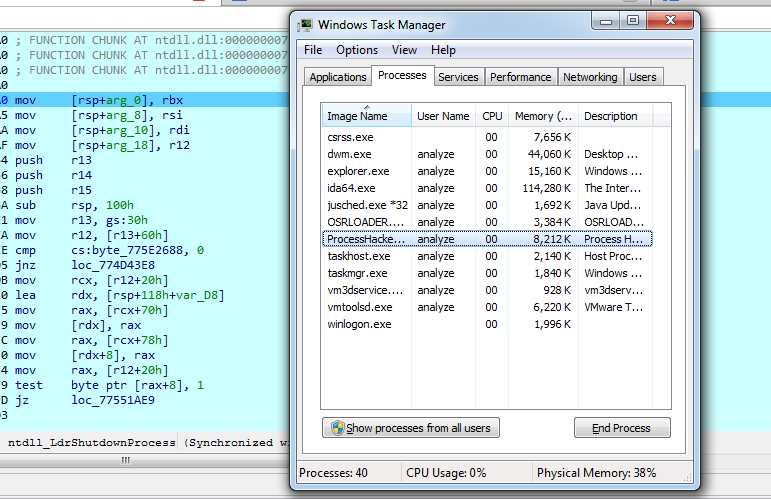

// Autor: Paweł Gross
// Kontakt: gross.pawel@protonmail.com
// repo: https://github.com/Groszekk/P4tch3r
Do zajęcia się tym tematem zainspirowała mnie chęć kontroli przepływu funkcji API. Nie chodziło mi tylko o stworzenie prymitywnego zaczepu funkcji aby móc skoczyć do swojego kodu. Poza tym aktualnie możliwość modyfikowania struktur kernela jest ograniczona przez Kernel Patch Protection (PatchGuard). Przy tworzeniu tego projektu pojawiło się kilka problemów które wręcz spowodowały ubytek czasu pracy, zwykle opierały się na niedopatrzeniach względem operacji na stosie, lub nieprzestrzeganiu ABI Windowsa.
Sposób pozyskiwania adresów funkcji Nt* nie zmienił się. Problem pojawia się przy architekturze x64 w której adres KeServiceDescriptorTable nie jest eksportowany przez co należy stworzyć jego strukturę, oraz przeszukać pamięć. Adres bazowy SSDT znajduje się na pierwszym miejscu w strukturze Service Descriptor Table…
Mając już adres NtTerminateProcess można przystąpić do nadpisywania pierwszych instrukcji. Testowałem tutaj kilka możliwych opcji z czego przeniesienie adresu do którego będę się odwoływał do rejestru RAX, a następnie wykonanie instrukcji call RAX wydawało się być najsensowniejsze.
mov rax, fffff880aaaaaaaah
call rax
Oczywiście przenosząc do rejestru adres o rozmiarze unsigned long long zostanie nadpisana więcej niż jedna instrukcja. Na szczęście żadna instrukcja nie została nadpisana w połowie, zatem obyło się bez nop’ów. Następnie należy odpowiednio przygotować shellcode, wartości 0x41 między komentarzami to miejsce w którym należy umieścić uwcześnie pobrany adres funkcji do której odwoła się NtTerminateProcess.
BYTE(num, b) w pętli wykonuje przesunięcie bitowe na argumencie w celu dodania adresu do shellcode’u bajt po bajcie.
Pozostało tylko wyłączyć ochronę pamięci przez zapisanie zerem 16-tego bitu w rejestrze cr0, co umożliwi zapisywanie do stron oznaczonych jako tylko do odczytu i skopiować shellcode do funkcji. Dzięki tej solucji mamy już adres powrotu na stosie, który warto z niego zdjąć i przechować w rejestrze r15, ponieważ będzie on kolidować z wartościami które umieszczą oryginalne instrukcje funkcji na stosie.
Calling convention funkcji Nt* opiera się na ABI Windowsa, argumenty liczb całkowitych mogą być przechowywane w rejestrach:RBX, RBP, RDI, RSI, RSP, R12, R13, R14, R15.
Poszukiwania rozpocząłem od stworzenia programu w C który wywołuje funkcję TerminateProcess, jak się później okazało wartości rejestrów, oraz stosu są różne od tego co zaobserwowałem zamykając inne programy, ponieważ nie często zdarza się aby jakiś program miał exit code nie równy zeru. Zatem postanowiłem dokładnie prześledzić co się zwykle dzieje po zamknięciu programu z GUI (posłużyłem się Process Hackerem). Funkcja NtTerminateProcess przyjmuje 2 argumenty, Handle i exit code.
Jak się okazuje argument zawierający exit code znajduje się w rejestrze RDX.
Wykonałem kod z RDX o wartości 0xABCD, co pokryło się z debug logiem rootkitu który wypisywał wartosć rejestru RDX i 0xaaaa na początku funkcji NtTerminateProcess.
Zatem przejdźmy do argumentu typu Handle. Handle to alias na void pointer.
Jako ciekawostkę podam że po wywołaniu RtlReportSilentProcessExit w NtTerminateProcess okno programu zniknęło, lecz nadal pozostaje na liście działających procesów.
Funkcja NtTerminateProcess wywołuje się dwukrotnie. Za drugim razem RCX jest równy 0xFFFFFFFFFFFFFFFF (-1). Co wskazuje na aktualnie wykonywany proces.
Podsumowując pierwszy argument (Handle hProcess) znajduje się w rejestrze RCX, drugi argument (UINT uExitCode) jest przechowywany w RDX.
Oba argumenty można również uzyskać dodając odpowiedni offset do wskaźnika stosu.
Przykładowy debug log:
NtTerminateProcess zwraca wartość NTSTATUS w rejestrze RAX. Odwołanie do swojego kodu przeniosłem 0x151 bajtów od początku funkcji. W tym miejscu znalazła się spora instrukcja, co ułatwiło sprawę.
Postanowiłem również pobieżnie sprawdzić zmienia się workflow z zależności od zwracanej wartości i dostrzegłem że w wypadku w którym po instrukcji test ebx, ebx zostaje ustawiona flaga SF to wywoływana jest funkcja NtTerminateThread z argumentem handle równym -2